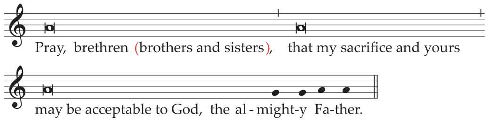
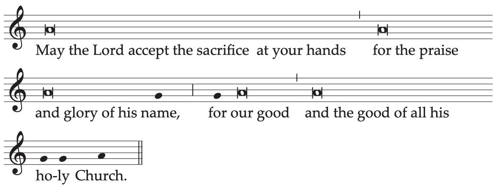

Home
Liturgy
Roman Missal
Order of Mass
21. When all this has been done, the Offertory Chant begins. Meanwhile, the ministers place the corporal, the purificator, the chalice, the pall, and the Missal on the altar
22. It is desirable that the faithful express their participation by making an offering, bringing forward bread and wine for the celebration of the Eucharist and perhaps other gifts to relieve the needs of the Church and of the poor.
23. The Priest, standing at the altar, takes the paten with the bread and holds it slightly raised above the altar with both hands, saying in a low voice:
Blessed are you, Lord God of all creation,
for through your goodness we have received
the bread we offer you:
fruit of the earth and work of human hands,
it will become for us the bread of life.
Then he places the paten with the bread on the corporal.
If, however, the Offertory Chant is not sung, the Priest may speak these words aloud; at the
end, the people may acclaim:
Blessed be God for ever.
24. The Deacon, or the Priest, pours wine and a little water into the chalice, saying quietly:
By the mystery of this water and wine
may we come to share in the divinity of Christ
who humbled himself to share in our humanity.
25. The Priest then takes the chalice and holds it slightly raised above the altar with both hands, saying in a low voice:
Blessed are you, Lord God of all creation,
for through your goodness we have received
the wine we offer you:
fruit of the vine and work of human hands,
it will become our spiritual drink.
Then he places the chalice on the corporal.
If, however, the Offertory Chant is not sung, the Priest may speak these words aloud; at the
end, the people may acclaim:
Blessed be God for ever.
26. After this, the Priest, bowing profoundly, says quietly:
With humble spirit and contrite heart
may we be accepted by you, O Lord,
and may our sacrifice in your sight this day
be pleasing to you, Lord God.
27. If appropriate, he also incenses the offerings, the cross, and the altar. A Deacon or other minister then incenses the Priest and the people.
28. Then the Priest, standing at the side of the altar, washes his hands, saying quietly:
Wash me, O Lord, from my iniquity
and cleanse me from my sin.
29. Standing at the middle of the altar, facing the people, extending and then joining his hands, he says:

Pray, brethren (brothers and sisters),
that my sacrifice and yours
may be acceptable to God,
the almighty Father.
The people rise and reply:

May the Lord accept the sacrifice at your hands
for the praise and glory of his name,
for our good
and the good of all his holy Church.
30. Then the Priest, with hands extended, says the Prayer over the Offerings, at the end of which the people acclaim:
Amen.